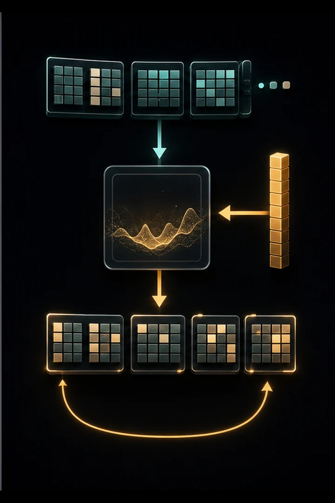

The same #04 model, rewritten in PyTorch. Thirty lines of manual gradient math become a single loss.backward(); the update loop becomes optimizer.step(); softmax+log becomes F.cross_entropy.
From here we never hand-derive a gradient again — which is exactly what frees us to build something as intricate as a transformer.
PyTorch packages the ideas so far into reusable machinery: tensors (n-dimensional arrays that track gradients), nn.Module (parameter bookkeeping), optimizers, and GPU acceleration. A single loss.backward() runs the same reverse-mode autodiff you built in #05, but over whole tensors; optimizer.step() applies the update rule to every parameter.
The optimizer matters: plain SGD uses one global learning rate, while Adam/AdamW keep per-parameter running estimates of the gradient's mean and variance to adapt each step size — far more robust for deep networks. This abstraction is exactly what frees the next steps to build something as intricate as a transformer without ever writing a gradient by hand.


import torch
import torch.nn as nn
import torch.nn.functional as F
WORDS = [
"emma", "olivia", "ava", "isabella", "sophia", "mia", "amelia", "harper",
"liam", "noah", "oliver", "william", "james", "benjamin", "lucas", "henry",
"anna", "anya", "maria", "elena", "nina", "sara", "leo", "max", "ella",
"grace", "chloe", "zoe", "lily", "aria", "ruby", "ivy", "luna", "nora",
]
CHARS = ["."] + sorted("abcdefghijklmnopqrstuvwxyz")
STOI = {c: i for i, c in enumerate(CHARS)}
ITOS = {i: c for c, i in STOI.items()}
VOCAB = len(CHARS)
BLOCK_SIZE = 3
EMB_DIM = 8
HIDDEN = 64
torch.manual_seed(0)
def build_dataset(words):
xs, ys = [], []
for word in words:
context = [0] * BLOCK_SIZE
for ch in list(word) + ["."]:
target = STOI[ch]
xs.append(context)
ys.append(target)
context = context[1:] + [target]
return torch.tensor(xs), torch.tensor(ys)
class MLP(nn.Module):
"""Exactly #4's architecture, expressed with PyTorch building blocks."""
def __init__(self):
super().__init__()
self.C = nn.Embedding(VOCAB, EMB_DIM) # the embedding table
self.fc1 = nn.Linear(BLOCK_SIZE * EMB_DIM, HIDDEN) # hidden layer
self.fc2 = nn.Linear(HIDDEN, VOCAB) # output scores (logits)
def forward(self, x):
emb = self.C(x) # (N, BLOCK_SIZE, EMB_DIM)
flat = emb.view(emb.shape[0], -1) # flatten the context
h = torch.tanh(self.fc1(flat))
logits = self.fc2(h)
return logits
def train(model, X, Y, epochs=2000, lr=0.1):
# The optimizer holds the parameters and applies the gradient-descent step.
optimizer = torch.optim.SGD(model.parameters(), lr=lr)
for epoch in range(epochs):
logits = model(X)
# cross_entropy = softmax + negative-log-likelihood, in one call.
loss = F.cross_entropy(logits, Y)
optimizer.zero_grad() # clear old gradients
loss.backward() # <-- autograd computes EVERY gradient for us
optimizer.step() # <-- update all parameters
if epoch % 200 == 0:
print(f"epoch {epoch:4d} loss {loss.item():.4f}")
@torch.no_grad()
def generate(model, max_len=20):
context = [0] * BLOCK_SIZE
out = []
for _ in range(max_len):
logits = model(torch.tensor([context]))
probs = F.softmax(logits, dim=1)
idx = torch.multinomial(probs, num_samples=1).item()
if idx == 0:
break
out.append(ITOS[idx])
context = context[1:] + [idx]
return "".join(out)X, Y = build_dataset(WORDS)
n_params = sum(p.numel() for p in MLP().parameters())
print(f"dataset: {len(X)} examples | model: {n_params} parameters\n")
model = MLP()
train(model, X, Y)
print("\nGenerated names:")
for _ in range(12):
print(" " + generate(model))dataset: 192 examples | model: 3571 parameters epoch 0 loss 3.3402 epoch 200 loss 1.6498 epoch 400 loss 1.2505 epoch 600 loss 0.9935 epoch 800 loss 0.8471 epoch 1000 loss 0.7713 epoch 1200 loss 0.7315 epoch 1400 loss 0.7089 epoch 1600 loss 0.6948 epoch 1800 loss 0.6855 Generated names: benjamin leo isy woliver lia nna huna anya sophia olivia jameliam ames